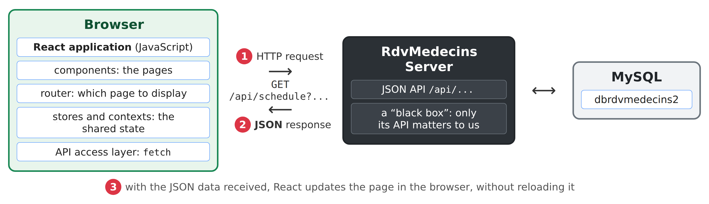
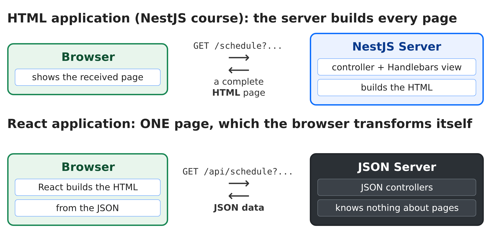

1. Einführung
Das PDF des Dokuments finden Sie HIER.
Den Code des Dokuments finden Sie HIER.
Dieses Dokument ist ein Produkt von Claude, der KI von Anthropic. Es setzt den Kurs „Schritt-für-Schritt-Einführung in das Web-Framework NestJS“ fort und wechselt dabei die Perspektive:
- Im Kurs [NestJS] erzeugt der Server die HTML-Seiten (View-Engine [Handlebars]); der Browser zeigt sie lediglich an;
- in diesem Kurs werden die Seiten im Browser von einer Anwendung [React] erzeugt; der Server, der nun nur noch ein einfacher JSON-Server ist, liefert ausschließlich Daten.
Die Seiten der Anwendung bleiben jedoch unverändert: Es sind die der Anwendung [RdvMedecins], die bereits mit den anderen Frameworks vorgestellt wurde (Anmeldung mit CAPTCHA, Terminkalender des Arztes, Terminfenster, Patientenportal, Arzt- und Clientverwaltung, Kontoerstellung, Französisch und Englisch).
Dieses Dokument folgt demselben Aufbau wie seine Vorgänger: zunächst zahlreiche kurze Beispiele, die sich jeweils auf ein bestimmtes Konzept von [React] konzentrieren, danach eine vollständige Fallstudie – der [React]-Client der Anwendung [RdvMedecins] – mit kommentierten Dateien. Es hat denselben Aufbau wie die Kurse *Schritt-für-Schritt-Einführung in das Framework Vue.js* und *Schritt-für-Schritt-Einführung in das Framework Angular*: Leser, die mit [Vue.js] oder [Angular] vertraut sind, finden dieselben Beispiele im Stil von [React] geschrieben wieder: 25 Beispiele, nummeriert wie im [Angular]-Kurs.
Zu diesem Thema gibt es bereits einen Kurs: Ein Client-Server-Beispiel mit React / NestJS (2026), der sowohl den Server als auch den Client behandelt. Dieses Dokument unterscheidet sich davon im Ansatz: Der Server wird als Blackbox behandelt, uns interessieren nur die API und JSON; wir lernen [React] Schritt für Schritt kennen, bevor wir den vollständigen Client in Angriff nehmen.
1.1. Die Rolle von React in einer Webanwendung
Die Anwendung besteht aus zwei Teilen, die ausschließlich über Anfragen miteinander kommunizieren:

- 1: Die [React]-Anwendung, die im Browser läuft, sendet eine HTTP-Anfrage an den Server, zum Beispiel [GET /api/schedule?doctorId=1&day=2026-10-05];
- 2: Der Server antwortet mit JSON-Daten: dem Terminkalender dieses Arztes für diesen Tag. Er erzeugt keine Seiten;
- 3: Anhand dieser Daten aktualisiert [React] die im Browser angezeigte Seite, ohne sie neu zu laden.
Das folgende Diagramm vergleicht die beiden Architekturen:

Der Browser lädt beim Start nur eine einzige, nahezu leere HTML-Seite. Alles Weitere wird vom [JavaScript]-Code erzeugt: Man spricht von einer Single-Page-Anwendung (SPA, für [Single Page Application]). Klickt der Benutzer auf einen internen Link, wird keine Seite vom Server angefordert: Der Router ändert die angezeigte URL und ersetzt den Inhalt der Seite.
[React] ist eine Bibliothek, die von [Facebook] (heute [Meta]) entwickelt und 2013 veröffentlicht wurde. Sie ist derzeit die am weitesten verbreitete Bibliothek zum Erstellen von Weboberflächen. Sie beruht auf drei Konzepten:
- Komponenten: Die Oberfläche wird in wiederverwendbare Teile zerlegt (eine Navigationsleiste, ein Formularfeld, ein Bestätigungsfenster usw.). Eine [React]-Komponente ist eine einfache [JavaScript]- (oder [TypeScript]-)Funktion , die zurückgibt, was angezeigt werden soll, geschrieben in JSX, einer Syntax, die HTML und [JavaScript] verbindet;
- Zustand und deklaratives Rendering: Die Daten einer Komponente werden in ihrem Zustand ([useState]) gespeichert. Ändert sich der Zustand, [React] ruft die Funktion der Komponente auf, vergleicht das Ergebnis mit dem vorherigen und aktualisiert automatisch alles, was sich auf der Seite geändert hat. Wir schreiben nie Code, der die Seite direkt verändert: Wir beschreiben die Seite in Abhängigkeit von ihrem Zustand;
- Hooks: Funktionen ([useState], [useEffect], [useContext] ...), über die eine Komponente auf die Mechanismen von [React] zugreift: Zustand, Seiteneffekte und gemeinsame Daten. Sie können eigene Hooks schreiben, um ein Verhalten wiederzuverwenden.
Anders als [Angular] ist [React] kein „Alles-in-einem“-Framework, sondern eine Rendering-Bibliothek. Der Router, Formulare, der HTTP-Client, Übersetzung und gemeinsamer Zustand werden von anderen Bibliotheken bereitgestellt, die der Entwickler auswählt. Dieser Kurs verwendet die gängigsten: [React Router] (der Router), [React Hook Form] (eine beispielhafte Formularbibliothek), [TanStack Query] (Lesen von Serverdaten), [Zustand] (gemeinsamer Zustand) und [i18next] (Sprachen). Das Build-Werkzeug ist [Vite].
Wir verwenden [React] 19 in seiner aktuellsten Ausprägung: Funktionskomponenten und Hooks (die alten, als Klassen geschriebenen Komponenten werden nicht mehr verwendet), Formularaktionen ([useActionState]), [use()] und [<Suspense>], [<title>] , das von einer Komponente platziert wird, [useEffectEvent] und [<Activity>] (React 19.2).
1.2. Verwendete Werkzeuge
Die Beispiele wurden mit den folgenden Werkzeugen geschrieben und getestet (Installationshinweise finden Sie im Anhang):
- [Node.js] 24 (oder mindestens 22.22: Das ist eine Anforderung von [React Router] 8) und sein Paketmanager [npm];
- der Editor [Visual Studio Code], der [TypeScript] und JSX ohne zusätzliche Erweiterungen unterstützt;
- ein aktueller Browser ([Chrome], [Firefox], [Edge]), nach Möglichkeit mit der Erweiterung [React Developer Tools];
- das Kommandozeilenwerkzeug [curl], das die rohen HTTP-Antworten anzeigt;
- das DBMS [MySQL] (oder [MariaDB]), zum Beispiel das von [Laragon] unter [Windows]: Es wird für den JSON-Server benötigt, wie im Kapitel zu seiner Vorstellung beschrieben.
Die Bibliotheken sind die der [package.json]-Dateien: [React] 19.3, [React Router] 8.4, [Vite] 8.3, [TypeScript] 6.0, [React Hook Form] 7.89, [TanStack Query] 5.104, [Zustand] 5.0, [i18next] 26 und [react-i18next] 17, [Bootstrap] 5.3.
1.3. Beispiele
Der Code des Dokuments ist in drei Ordnern organisiert:
Der Ordner examples enthält fünfundzwanzig kleine Anwendungen – eine pro Beispiel –, die dieselben Bibliotheken verwenden:
Installieren Sie die Bibliotheken einmalig in einer Konsole, die im Ordner [examples-react] geöffnet ist (in [VS Code]: Menü Terminal / Neues Terminal):
Führen Sie dann ein Beispiel aus, indem Sie seinen Namen eingeben:
Der Entwicklungsserver von [Vite] stellt das Beispiel auf Port 5173 bereit: Öffnen Sie es unter http://localhost:5173/. Dieser Server muss nicht neu gestartet werden, wenn Sie eine Datei ändern: Jede gespeicherte Datei wird sofort neu kompiliert, und die Browserseite aktualisiert sich automatisch, meist sogar ohne ihren Zustand zu verlieren. Beenden Sie ihn mit [Ctrl-C] in der Konsole, bevor Sie das nächste Beispiel starten (nur ein Beispiel gleichzeitig kann Port 5173 belegen).
Die Beispiele 22 bis 25 fragen die JSON-Server von [RdvMedecins] ab: Sie müssen sie installiert und gestartet haben, wie im ihnen gewidmeten Kapitel erläutert.
1.4. Inhalt des Dokuments
Kapitel | Inhalt | Beispiele |
Erste Schritte | Eine Anwendung, Zustand, JSX, Ereignisse, kontrollierte Felder, useReducer, Validierung, React Hook Form, Formatierung | 01–09 |
Komponenten | Props, an die übergeordnete Komponente weitergereichte Funktionen, Komposition (children, Render-Props), Lebenszyklus und Effekte, Kontexte, eigene Hooks, Bestätigungsdialog | 10 bis 16 |
Routing | React Router, Navigations-Guards (Middleware) | 17 und 18 |
Asynchrone Operationen und gemeinsamer Zustand | Timer, Entprellen, veraltete Antworten, use() und Suspense, Zustand | 19 und 20 |
Internationalisierung | Eine Anwendung auf Französisch und Englisch (i18next) | 21 |
Der Server: eine Blackbox | Installation des JSON-Servers, seine API, curl-Beispiele | - |
Interaktion mit dem Server | fetch, Anmeldung und Cookies, Formularaktionen, die API-Zugriffsschicht, TanStack Query, Serverfehler | 22–25 |
Fallstudie | Der React-Client der Anwendung RdvMedecins | - |
Bereitstellung | Der kompilierte Client, ausgeliefert vom JSON-Server | - |
Jedes Beispiel wird mit seinem vollständigen, Zeile für Zeile kommentierten Code und einem Screenshot seiner Ausführung vorgestellt. Der Code selbst ist umfassend kommentiert: Diese Kommentare sind Teil des Kurses.